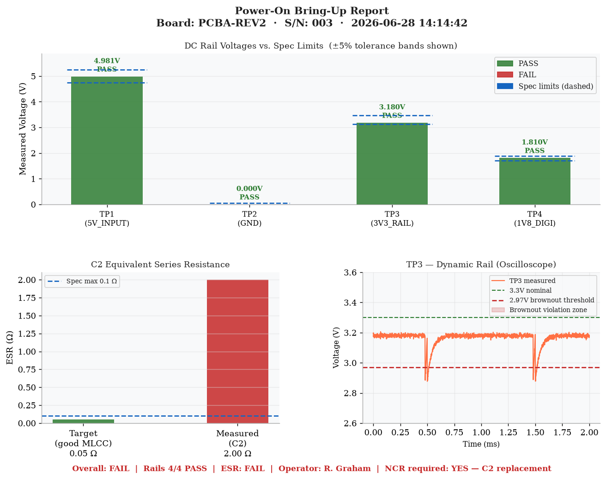
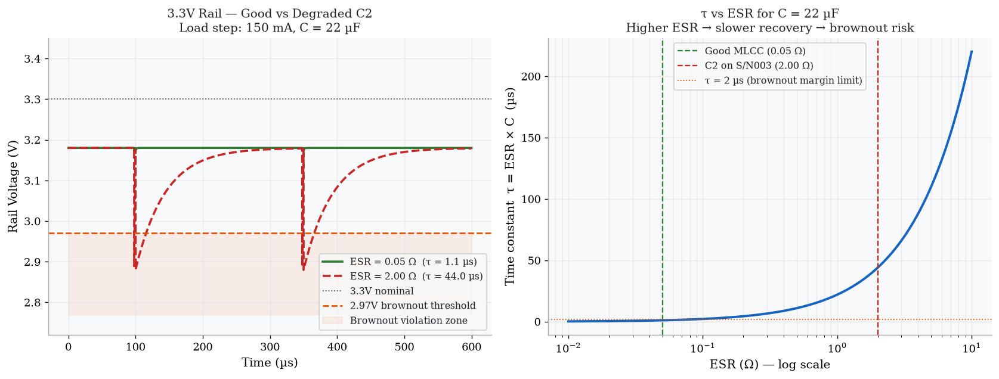
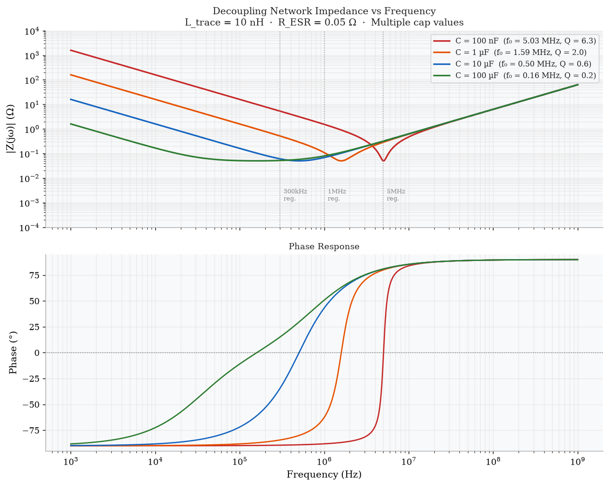
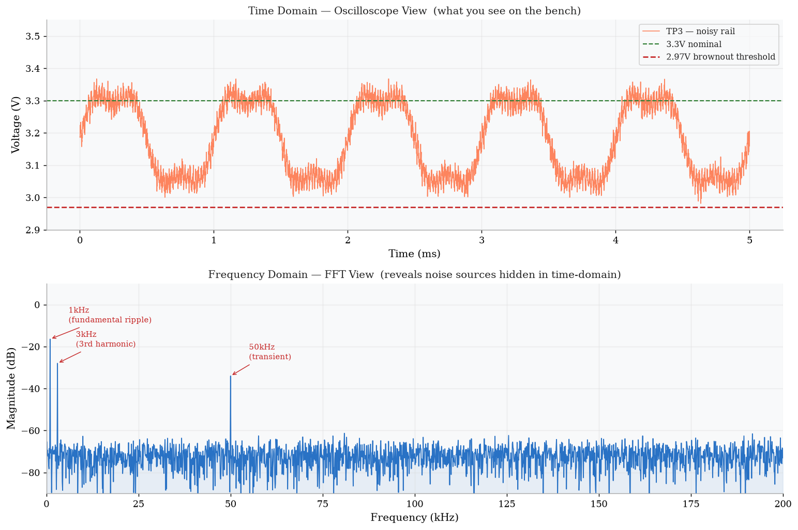
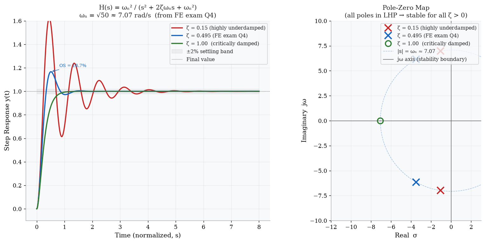
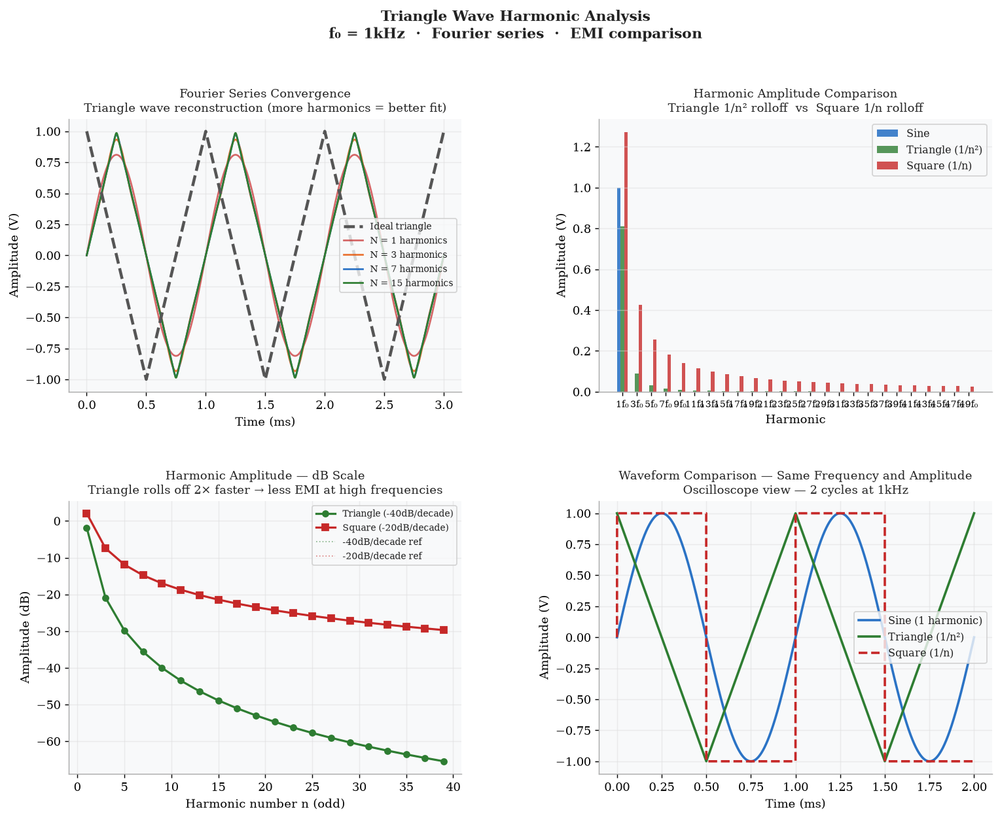

What This File Does
OverviewTwo Python scripts extend the EET study workspace with real engineering analysis. They tie directly into the HTML simulation files already built — every plot references a specific section in those files, and every SCPI command maps to a real bring-up step.
instrument_automation.py
Automates the 10:00 AM bring-up sequence from
daily_workflow_simulation.html
using pyvisa and SCPI commands. Runs in simulation mode by default —
flip one flag to control a real Keysight PSU, DMM, or Rigol scope over USB.
signal_analysis_deep.py
Five scipy.signal / numpy / matplotlib
analyses covering ESR dynamics, RLC impedance, FFT noise identification, transfer
function step response, and triangle wave harmonics. Each plot is the math behind
something drawn on canvas in the existing HTML files.
How to Run
SetupPrerequisites
pip3 install numpy scipy matplotlib pyvisa pyvisa-py --break-system-packagespyvisa requires no hardware in simulation mode. To use real instruments,
connect via USB and set SIMULATION_MODE = False in
instrument_automation.py, then update the three resource ID strings with
addresses returned by rm.list_resources().
Electrical Electronic Technician/
python3 instrument_automation.pyanalysis_output/bring_up_report.png
python3 signal_analysis_deep.pyanalysis_output/01_esr_comparison.png through 05_triangle_harmonics.png
analysis_eet.html in a browser — all plot images load from analysis_output/
How It All Connects
Cross-Reference| Python Output | FE Topic | HTML File — Section | Real Bench Tie-In |
|---|---|---|---|
bring_up_report.png |
Circuit Analysis | daily_workflow — 10:00 AM block | PSU + DMM + scope bring-up sequence on PCBA-REV2 |
01_esr_comparison.png |
Circuit Analysis (RC transient) | Scenario 01 — root cause; FE→Bench — Q1 | Measuring C2 ESR with DMM; diagnosing brownout on 3.3V rail |
02_rlc_bode.png |
Linear Systems (resonance, Bode) | FE→Bench — Q2; FE exam q2_rlc_resonance.png |
Selecting bypass cap value; using scope FFT to find resonance peak |
03_fft_noise.png |
Signal Processing (FFT, Laplace) | Waveform Viz — Waveform 2 (noisy); FE→Bench — Q3 | Scope FFT mode to find ripple frequency; spectrum analyzer use |
04_step_response.png |
Linear Systems (transfer function, poles) | FE→Bench — Q4; FE exam q4_transfer_fn.png |
Clock edge ringing on scope; oscillator / filter overshoot diagnosis |
05_triangle_harmonics.png |
Signal Processing (Fourier series, EMI) | FE→Bench — Triangle Wave section | PWM carrier waveform selection; comparing square vs triangle EMI on PCB |
instrument_automation.py
pyvisa · SCPISIMULATION_MODE = False for live instrument control.
Step 1 — Power Supply Setup
Keysight E36312AApply the input voltage with a current limit before the board is connected. The current
limit (0.5A) protects against a hard short — if current immediately pegs to
the limit, halt and inspect for assembly defects before applying full power.
| SCPI Command | What it does | Why |
|---|---|---|
| *RST | Reset instrument to factory defaults | Clears prior test state; ensures known starting condition |
| VOLTage 5.000 | Set output voltage to 5.000 V | PCBA-REV2 input spec is 5V ±5% |
| CURRent:LIMit 0.500 | Set current foldback limit to 500 mA | Normal idle draw is ~150 mA; 500 mA indicates fault condition |
| OUTPut:STATe ON | Enable output | Applies power to the board under test |
| MEASure:VOLTage? | Read actual output voltage | Confirms load regulation; should be within 0.5% of set point |
| MEASure:CURRent? | Read actual output current | Abort if > 90% of current limit before measuring rails |
Step 2 & 3 — Multimeter Rail Sweep + ESR
Keysight 34461AAfter confirming normal current draw, sweep all test points with the DMM. Each rail is checked against a ±5% tolerance band. Then (with board powered off) measure C2 ESR to confirm whether the bypass capacitor is degraded.
| SCPI Command | What it does | Why |
|---|---|---|
| CONFigure:VOLTage:DC AUTO | Set DMM to DC volts, auto-range | DC mode for static rail measurement |
| MEASure:VOLTage:DC? AUTO | Trigger measurement and return value | Single-shot read; repeat for each TP |
| CONFigure:RESistance AUTO | Switch to 2-wire resistance mode | Used for ESR measurement (board powered off) |
| MEASure:RESistance? AUTO | Read resistance (Ω) | C2 ESR spec ≤ 0.10 Ω; failing board reads 2.00 Ω |
| CONFigure:CONTinuity | Set to continuity mode | Beeps + returns 1 if path < threshold resistance |
| MEASure:CONTinuity? | Returns 0 (open) or 1 (connected) | Checks GND strap, fuse, connector integrity |
Step 4 — Oscilloscope Dynamic Check
Rigol DS1054ZAfter DC rails pass, check TP3 dynamically with the oscilloscope. Static DMM readings won't catch transient sags — the scope reveals peak-to-peak ripple, sag depth, and ripple frequency, which together confirm whether the root cause is the bypass cap or the regulator.
| SCPI Command | What it does | Setting chosen |
|---|---|---|
| :CHANnel1:COUPling DC | DC coupling on Ch1 | Shows absolute voltage level; use AC to zoom in on ripple |
| :TIMebase:SCALe 0.000200 | 200 µs/div | 1kHz ripple = 1ms period → shows 5 cycles across screen |
| :CHANnel1:SCALe 0.5000 | 500 mV/div | 3.3V nominal + ~0.5V range: 3.3V is ~7 div from GND |
| :TRIGger:EDGe:SLOPe NEGative | Trigger on falling edge | Captures voltage sag onset; stabilizes waveform display |
| :TRIGger:EDGe:LEVel 3.000 | Trigger level 3.0 V | Below nominal 3.3V — triggers on sag, not noise |
| :MEASure:VPP? CHANnel1 | Measure peak-to-peak voltage | Spec: < 50 mV p-p; failing board: ~420 mV p-p |
| :MEASure:VMIN? CHANnel1 | Minimum voltage in capture window | Must remain above 2.97 V brownout threshold |
| :WAVeform:DATA? | Download raw ADC samples to PC | Allows offline post-processing (FFT, min/max in Python) |
:WAVeform:DATA?. Once I have the raw samples I can run FFT, find the ripple
frequency, compare it against the switching regulator datasheet to confirm the source, and
auto-generate a pass/fail summary — that's the kind of workflow I'd want to build in an
ATE environment."
Test Report Output
matplotlib · analysis_output/The script generates analysis_output/bring_up_report.png — a three-panel
figure showing DC rail bar chart, C2 ESR comparison, and TP3 dynamic oscilloscope trace
with brownout threshold marked.

The left plot compares the 3.3V rail transient response for a good MLCC cap (ESR = 0.05 Ω) vs the degraded C2 on S/N 003 (ESR = 2.0 Ω) during a 150 mA MCU load step. The right plot shows τ = ESR × C as a design space — the line crosses the brownout margin at around 0.1 Ω, which is why that ESR is the spec limit.

FE Exam Connection — Q1 RC Transient
This is the same first-order RC transient from FE exam Q1: vC(t) = V·(1 − e−t/τ), where τ = RC. On the PCB, R is the ESR of the capacitor, and the "circuit" is the capacitor trying to maintain the rail voltage during a load step. See FE→Bench Practice — Q1 for the full annotated waveform.
The impedance of a decoupling network (trace inductance L in series with bypass cap C, both with ESR) has a minimum at the resonant frequency ω₀ = 1/√(LC). That minimum is where the cap most effectively absorbs switching noise — you want ω₀ aligned with the switching regulator frequency. Different cap values shift that minimum.

FE Exam Connection — Q2 RLC Resonance
FE exam Q2 uses R=5Ω, L=50mH, C=20µF → ω₀ = 1000 rad/s, Q = 10. This PCB analysis uses L=10nH and C in nF–µF range, so f₀ is in the MHz band — same formula, different component scale. The Bode plot shape is identical. See FE→Bench Practice — Q2.
The time-domain view on an oscilloscope shows noise but doesn't easily reveal what frequency it's at. The FFT converts the same signal to the frequency domain and immediately shows three discrete peaks: the 1kHz switching ripple fundamental, its 3kHz 3rd harmonic, and a 50kHz transient artifact — all hidden in the time-domain waveform until the FFT is applied.

FE Exam Connection — Q3 Laplace / Sinusoidal Components
FE exam Q3 shows that f(t) = 3sin(2t) has Laplace transform F(s) = 6/(s²+4) with poles at ±j2. Each peak in the FFT plot corresponds to a pair of imaginary poles — the 1kHz ripple has poles at ±j·2π·1000. Same concept, applied to an oscilloscope measurement. See FE→Bench Q3.
np.fft.rfft() on the captured samples and annotates the dominant peaks.
That's how you quickly narrow down whether the noise is the regulator, a clock, or an
external coupling source."
H(s) = ωₙ² / (s² + 2ζωₙs + ωₙ²) is the standard second-order transfer function. Three damping ratios are compared: ζ = 0.15 (heavy ringing), ζ = 0.495 (the FE exam Q4 value — moderate ringing), and ζ = 1.0 (critically damped, no ringing). The pole-zero map shows all poles in the left-half plane (stable) for all three cases.

FE Exam Connection — Q4 H(s) = 50/(s²+7s+50)
This is the exact same system from FE exam Q4: ωₙ = √50 ≈ 7.07 rad/s, ζ = 7/(2·√50) ≈ 0.495, poles at −3.5 ± j6.14. On the bench, this corresponds to ringing on a clock edge or op-amp step response. The 16.7% overshoot and ringing are exactly what you'd measure on the oscilloscope when probing the output. See FE→Bench Q4.
Triangle, square, and sine waves at the same frequency and amplitude have very different harmonic content. Triangle rolls off at −40 dB/decade (harmonics fall as 1/n²); square rolls off at only −20 dB/decade (1/n). This means a triangle PWM carrier generates significantly less radiated EMI at high frequencies than a square wave carrier — −23 dB less at the 9th harmonic.

Fourier Series Recap
Triangle: v(t) = (8A/π²) Σ [(-1)ⁿ/(2n+1)²] sin((2n+1)ω₀t) — only odd harmonics, amplitudes fall as 1/n²
Square: v(t) = (4A/π) Σ [1/(2n+1)] sin((2n+1)ω₀t) — only odd harmonics, amplitudes fall as 1/n
See FE→Bench Practice — Triangle Wave section for the canvas animation and slew-rate annotation.
CAD Notes
Altium Designer · OrCAD · Eagle · IPC-2221Altium Designer — Footprint Verification
- Open PCB file → right-click C2 → PCB Inspector
- Confirm footprint is 0805 (correct for 22µF MLCC, not 0402)
- Check courtyard clearance ≥ 0.25mm from adjacent components
- Net Inspector → verify C2 connects to
3V3_RAILandGND - Run Tools → Design Rule Check → Short-Circuit and Clearance rules
IPC-2221 — Trace Width Calculation
For the 3.3V rail trace carrying 500 mA:
Area(mil²) = [I / (k × ΔT^0.44)]^(1/0.725)
k = 0.048 (external layer)
k = 0.024 (internal layer)
I = 0.5A, ΔT = 10°C
External: Area ≈ 23.5 mil² → width ≈ 23.5 mil (0.6mm) at 1oz CuVerify in Altium: right-click trace → Properties → Width field.
Impedance Review — Layer Stack Manager
- Open Design → Layer Stack Manager
- Select the 3.3V rail layer
- Confirm microstrip impedance matches routing tool target (typically 50Ω for RF nets)
- For power traces: impedance is not the constraint — current capacity is (IPC-2221)
- For high-speed nets: check that differential pair spacing matches Z₀ = 100Ω diff
DRC Checks After Rework
- After C2 replacement: run DRC for short-circuit and clearance rules
- Check Pad-to-Pad clearance ≥ board design rule (typically 0.1mm)
- Run Net Inspector to confirm no net splits introduced during rework
- Cross-check with OrCAD schematic: C2 value should be 22µF / 6.3V / X5R
- Eagle: use DRC → Run and check Errors panel
BSDL Verification (Boundary-Scan)
- Confirm BSDL files for U4 and U6 are loaded in boundary-scan tool
- Run EXTEST on ADDR_BUS[4] (U4.PIN22 → U6.PIN3) after C2 rework
- Expected result: no more OPEN fault on that net post-repair
- See waveform_boundary_scan.html — Fault Diagnostics tab
SCPI Post-Rework Verification
After replacing C2, re-run with modified settings in instrument_automation.py:
# Switch scope to AC coupling to zoom in on ripple
:CHANnel1:COUPling AC
:CHANnel1:SCALe 0.0500 # 50mV/div
:MEASure:VPP? CHANnel1
# Expect: < 50mV p-p (was 421mV on failing board)Re-run ESR check: expect < 0.10 Ω for new MLCC cap.